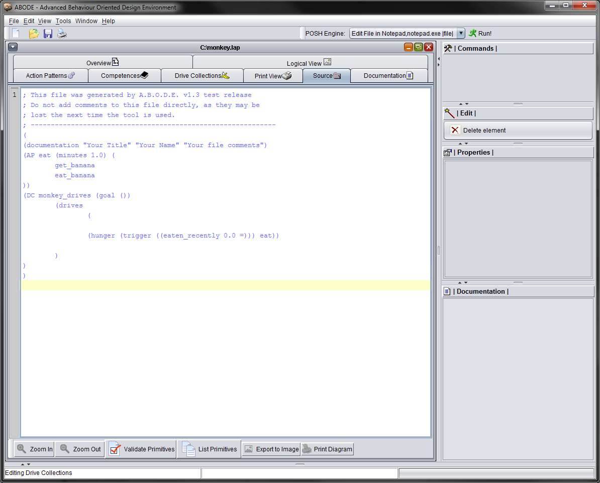
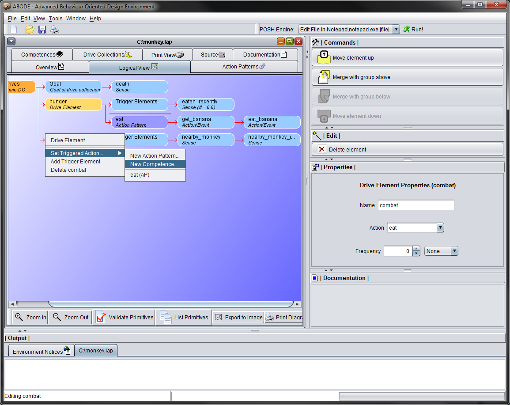

Overview
The Advanced Behavior Oriented Design Environment (ABODE) development software is a tool for developing POSH (Parallel-rooted, Ordered Slip-stack Hierarchical) dynamic plans, which are the structures used for action selection (also known as behavior arbitration or coordination) in Behavior Oriented Design (BOD).
A BOD AI mechanism has two components:
A POSH dynamic plan for action selection. This is a flexible, hierarchical data structure which provides structured intelligent control by setting an individual agent's priorities.
A library of Behavior Modules. The modules generate and control the actions of the agent, process its perception and store and maintain any memory required if the agent learns. These are referred to here as action and sense primitives and are the lowest level element of a POSH plan.
ABODE allows you to easily develop a POSH action plan, which can then be used to call the action primitives that are developed using other tools. The development of these action and sense primitives is outside of the scope of this documentation, however more about this can be found in the documentation for BOD and in this POSH implementation guide.
Behavior Oriented Design – Action Selection with POSH
For a more complete overview on POSH, click here.
The BOD action selection mechanism POSH has two types of primitives:
Action primitives – These tell an agent to do something.
Sense primitives – These provide information about the world the agent is situated in.
These elements by themselves they do not provide a structured plan. These elements are then combined into a hierarchical plan using POSH aggregates.
There are three different types of aggregates which all work together and provide different levels of complexity and functionality. The three types are:
drive collection: this is the root of the POSH hierarchy, and on every POSH action-selection cycle, this reconsiders which goal the agent should be working on. This is how a BOD agent can respond rapidly to changes in the environment. A drive collection is the highest level of a POSH plan hierarchy, and is generally used to specify high-level drives. A drive element is made up of a set of triggers which if activated will engage the actions of the drive. The actions can be competences and action patterns.
competences: these are basic reactive plans. They allow a BOD agent to complete a task robustly and opportunistically. A competence can be made up of multiple competence elements. A competence element is made up by a series of senses which when triggered will activate an action. This action can be another competence, an action pattern, or an action primitive.
action patterns: or simple sequences. These are a basic kind of plan aggregate which turn out to be useful in quite a lot of situations, despite their lack of flexibility. An action pattern is simply a series of action primitives which will be performed in a sequential order. They reduce the combinatorial complexity of the agent when a full competence is not really necessary.
The ABODE software provides a way to develop a POSH hierarchical plan using a graphical interface, which can then be saved as a POSH action plan that can then be parsed and ran with the POSH software.
Introduction to ABODE
In this section, a brief overview of a typical view of ABODE is provided.
When editing an existing file, ABODE will look something like this:
The different marked sections are as follows:
Menu bar - Here you can open new files, save the currently open file etc.
Main view – This is the main view which shows the currently open POSH action plan.
Console – The output console. This provides feedback when ABODE performs certain actions and shows the output from tools such as the “List Primitives” operation.
POSH Elements – The contents of the action plan. Elements are shown in a hierarchical fashion, from left to right. The root node is always shown at the top left.
Properties and Action Pane – Here are most of the options that are available for editing the selected POSH node. When an element is selected in the main view, this populates with all of the available options for editing and manipulating that node.
View Select – There are a variety of different views which can be used to view the POSH action plan.
Quick Start Tutorial
In this tutorial a small example will be covered that goes over how to use most of the POSH elements in an action plan using ABODE. The example involves making an action plan for a Monkey agent that has two drives, one for dealing with hunger and another to fight enemies. The first thing to do is to create a new lap file (File → New). This will create an action plan with a root drive collection called NewDriveCollection. We want to rename this to something more useful, so if we click on this, we can change the name in the properties panel on the right. Rename this to monkey_drives.
A drive collection has a list of goals that are checked whenever the drive collection is evaluated. If all of the goals return true, then the agent has reached its goal and will terminate. Because of this, we need to add a goal for the agent to work. For the monkey agent, we want this to keep running until the monkey agent is killed, so we will add a new goal called death. To do this, right click on the drive collection and select “Add Goal Sense” and rename it to death. A lot of actions in ABODE are performed though right-click menus. Child nodes such as adding goal senses and triggers are all added through the right click menu of the parent node.
To prevent this untimely demise of the monkey from ever occurring, we will add a new drive element that will cause it to eat food when required. To do this, right click on the drive collection and select “Add new drive element.” A prompt will appear asking for the name, call it hunger. The action plan will now look like this.
For a drive element to ever be triggered, it needs at least one sense associated with it. For hunger, we will check whether the monkey has eaten recently. Right click on the drive element and click “Add Trigger Element”. Then click on the new trigger that was created, and set the sense name to be something like eaten_recently (if you cannot see the trigger element, you may have to change to another view. Try switching to the Drive Collection view in the view tabs at the top of the tree view.) The default value a sense will be checked against is whether it returns true(1). However we want the monkey to eaten when it hasn't eaten recently. So we can change the predicate to be equal to 0(false), which will produce the desired behaviour. This can be changed in the properties panel for the sense.
The action that we will use to remedy the monies hunger problem will be made up of a series of smaller actions. This is done by using an Action Pattern. To create a new action pattern for this node, right click on the drive element and select “Set Triggered Action → New Action Pattern.” You will be prompted to name this new action pattern, name it “eat”. This will create a new action pattern and set it as the action for this drive element.
To add action primitives to the new action pattern, find the new action pattern (it is easiest to locate and edit in the Action Patterns view) and right click on it. Click “Add action element” two times to add two elements. Rename the first to “get_banana” and the second to “eat_banana” (in POSH all element names must be one word, hence the underscores instead of spaces). In POSH, actions are evaluated in order from left to right, so this will make the agent first call the get_banana primitive and then the eat_banana primitive if this action pattern is called.
Now go ahead and save the file to a location of your choosing. After saving you will be able to view the source code generated by ABODE. This can be done by selecting the source tab at the top of the viewing window.

Notice the “Documentation” element which currently has the default text. If you would like to update this, switch to the “Documentation” view tab. This lets you change the contents of this element.
To see the complete tree in hierarchical form use the “Logical View.” If you switch to this now, you should have something which looks like this:
This view shows everything and is therefore quite useful for small plan files such as this one. For larger files, it can be convenient to be able to show any one type of element, which is where views such as Action Pattern and Drive Collections are useful.
Now that we have a basic plan with a single drive, we will now make a second more complex drive. This will allow our monkey agent to be able to defend itself against hostile. To start off with, like before create a new drive element, this time with the name “combat”. Also like before, right click on the new drive element and add a sense. Call this sense “nearby_monkey” and leave the rest of the properties as they are. Add a second sense called “nearby_monkey_is_hostile.” This second sense means that the monkey will only engage the combat drive if a nearby monkey is actively hostile against it. We don't want our monkey agent to attack all of the monkeys, as that is a bad way to make friends.
The action that we are going to associate with this drive element is going to be more complicated than the one that was used for eating, so we are going to use a competence instead of an action pattern. Right-click on the drive and set the action to be a new competence (Set Triggered Action → New Competence). Name the new competence “fight”.

A competence is similar to a drive collection, in that it holds a set of smaller elements which are evaluated in order. The competence has a goal like a drive collection and each of the competence elements has its own triggers.
After creating the competence, add a new goal “defeat_opponent.” Our monkey agent will be very civilized in combat and will only engage opponents when wielding a weapon. To make sure this is the case, we will add two competence elements to the competence. The first will engage an opponent if the agent is currently wielding a weapon, the second will make sure the monkey is currently equipped with a weapon and if this isn't the case then will try and pick one up.
The first competence element we will be called “engage_combat.” Create a new competence element by right clicking on the Competence and selecting “Add new Competence Element.”
Add a new trigger with a sense name of “has_weapon” and set the action to be an action primitive with the name “combat.”
Now we need to make the monkey pick up a weapon. Create a second competence element and name it pick_up_weapon.

Just like before, add a new trigger with the sense “has_weapon” but this time with the predicate “!=” (not equals.) Note that you can use the drop down box on the sense name to select senses that you have used elsewhere in the file.
Add a second trigger with sense name “near_weapon.” This is needed so that the agent doesn't try to pick up non-existent weapon. Then we will use an action primtiive named “pick_up”.
For a further exercise, feel free to update the original “eat” action pattern with a competence that checks that monkey isn't already holding a banana before trying to get one.
Also note that it is possible to rearrange elements in drive collections, action patterns and competences. This is important due to the fact that POSH evaluates nodes in turn, from top to bottom. As soon as one an element is triggered successfully, POSH resets back to the top of the hierarchy. So this allows elements to have a priority order. The elements can be moved around using the command panel, as shown here:
Another important property is the frequency. Drive elements can be set to have a frequency of how often it will be fired. If a frequency value is set on a drive element, once it is triggered successfully, a timer starts and this drive element cannot be triggered again until this timer exceeds the frequency value. This allows lower priority drive elements to be triggered in the down time of the higher priority tasks.
With all of this done, we are left with a second drive element which calls a competence with two child competence elements for dealing with engaging enemies. Of course in a real system the action and sense primitives will have to be programmed elsewhere in a behaviour library so that they can be called by POSH.